糖尿病合併庫欣的狗：Sunny、Sierra、Dora
主講：Antonio Tardo, DVM, PhD, Dipl. ECVIM-CA｜UC Davis 小動物內科助理教授
2026 年 10 月 8 日｜VET-KU × Texas A&M 內科研討會｜場次 16
🎧 聆聽課堂錄音（Plaud）↗
資料來源標記：
投影片（頁碼為投影片編號）
🎤 課堂逐字稿
📷 現場 現場拍攝（講義未收錄）
✍️ 筆記 上課筆記
💡 補充 整理者補充（機轉、交叉參照）
【更正】 逐字稿轉文字錯誤，以講義為準（完整列表見最後一節）
⭐ 必記原則
- 糖尿病犬最常見的共病就是庫欣：糖尿病犬約 23% 合併庫欣；合併兩病的中位存活期約減半（14 vs 28 個月）
- 庫欣犬空腹血糖 > 100 mg/dL 就是糖尿病前期，要列入追蹤
- 糖尿病犬 USG 偏低要警覺：尿糖應該會把 USG 撐高
- 高血脂可能讓果糖胺假性升高或降低
- 沒控制的糖尿病本身會造成庫欣檢查偽陽性，要有更多證據才診斷
- Trilostane 0.5–1 mg/kg BID、隨餐；開始 trilostane 時不要同時改胰島素
- 講者：起始劑量低，所以庫欣第一次回診排在 3–4 週（Bugbee 認為 1–2 週）；糖尿病則每 2 週換一次 Libre，每 2–3 天就依數據調胰島素
- IG 已在 80–250 但仍有症狀 → 該加強的是庫欣，不是糖尿病
- 嚴重胰島素阻抗：detemir 已停產時，NPH 可能是目前效力最強的選擇（但作用只有 8–10 小時）
- 血糖變異度大 → 優先換基礎型胰島素（glargine U300 或 degludec，選便宜的）；有共病者約一半需要 BID
- 基礎型胰島素不處理餐後高峰 → 增加餐次
- 加 SGLT-2i 時一定要減胰島素；要治療的是狗，不是數字：注意 PU/PD 與體重下降
- 犬對 velagliflozin 比貓敏感很多，貓的 1 mg/kg 對狗太高
核心觀念與總覽
▾🎤 場次資訊
- 講者：Antonio Tardo（DVM, PhD, Dipl. ECVIM-CA），UC Davis 小動物內科助理教授。也是 01 PU/PD、08 DKA/HHS、12 庫欣診斷與內科治療 的講者，glargine U300 每日一次劑量調整研究的第一作者。
- 整場用三隻狗串起來，代表三種情境：
| 病例 | 情境 | 關鍵處置 |
|---|---|---|
| Sunny | 庫欣＋糖尿病，嚴重胰島素阻抗 | Trilostane BID、換 NPH、加 fenofibrate |
| Sierra | 庫欣、沒有胰島素阻抗，血糖變異度大 | 換 degludec BID、增加餐次 |
| Dora | 庫欣＋高血脂，胰島素阻抗＋變異度 | 加 SGLT-2i（velagliflozin）、減 detemir |
💡 補充 與其他場次的關聯
- 胰島素種類、glargine U300、degludec 的基本介紹：見 02 犬糖尿病與胰島素（Mott；講者說「這部分 Mott 已經講過」）。
- SGLT-2i 在犬的仿單外使用：見 04 SGLT-2i 仿單外使用。
- 基礎型胰島素搭配增加餐次：見 06 糖尿病營養（Bugbee）。
- LDDST 逃脫型、PDH 的超音波判讀、trilostane BID 的圖：見 12 犬庫欣氏症：診斷與內科治療（講者多次提到「10/7 講過」）。
- 庫欣監測的 ALIVE 評分、給藥前皮質醇與 ACTH 刺激試驗的限制：見 13 庫欣監測與替代療法（Bugbee）。
- SGLT-2i 的 PU/PD 副作用、0.5 U 胰島素等問題：見 14 座談會 Q&A。
1. 機轉、盛行率與存活
▾為什麼皮質醇會打敗胰臟
- 周邊組織的胰島素敏感度下降：干擾胰島素受體與受體後的訊號傳遞。
- GLUT-4 表現量下降：肌肉和脂肪吸收的葡萄糖變少。
- 肝臟糖質新生與肝醣分解增加：肝臟輸出的葡萄糖變多。
- 胰臟 β 細胞失能：這一步會讓糖尿病變成永久性。
胰島素阻抗加上高胰島素血症：在 β 細胞還能代償的期間，這隻狗處於糖尿病前期。💡 補充 第 1–3 項是可逆的胰島素阻抗；β 細胞長期過勞衰竭（第 4 項）之後才回不去。這是第 12 節「預防」的理論基礎：趕在 β 細胞衰竭前介入。
🎤 這種組合有多常見
- 從糖尿病端看（Hess 等，JAVMA，221 隻糖尿病犬）：庫欣 23%、胰臟炎 13%、腫瘤 5%、甲狀腺功能低下 4%。最多約 25% 的糖尿病犬同時有庫欣。
- 🎤 glargine U300 的研究裡，也有大約 20% 的糖尿病犬有庫欣。
- 從庫欣端看（Miceli 等，Res Vet Sci 2017，阿根廷，235 隻庫欣犬，2011–2015）：
- 13.6%（32 隻）有糖尿病，其中 93.8% 是 PDH。
- 19 隻在庫欣確診時已經有糖尿病：12 隻兩病同時發現，7 隻先有糖尿病。
- 13 隻在庫欣確診後 2–11 個月才變成糖尿病。🎤 可能很快，也可能幾個月甚至幾年後才發生。
🎤 為什麼這種組合很重要：存活期 14 vs 28 個月
- 同一篇阿根廷研究的存活曲線：庫欣＋糖尿病中位存活期 14 個月，只有庫欣 28 個月。
- 🎤 講者認為沒有特定的生理原因，比較可能是兩病同時存在時管理非常複雜、飼主花費很高，很多狗最後被安樂死。所以如果能避免兩病同時發生，就值得嘗試治療（見第 12 節）。
2. 互相懷疑的線索與危險因子
▾🎤 糖尿病犬什麼時候要懷疑庫欣
- 胰島素阻抗。🎤 沒有明確的切點說超過 1 或 2 U/kg 就是阻抗。講者心裡的參考是：用新的基礎型胰島素時大約 2 U/kg/day。但重點不是數字本身，而是「劑量一直往上加，血糖卻控制不下來」的狗。
- 血糖變異度明顯：一天之內或不同天之間血糖上上下下（見第 7 節）。
- 糖尿病解釋不了的症狀：脫毛與皮膚變化、腹部膨大、肌肉萎縮、喘、多食，以及糖尿病控制好了卻仍持續 PU/PD。
- 檢驗：ALP、GGT、結合球蛋白（haptoglobin）上升，持續高血脂，尿液低張或等張。
- 超音波下腎上腺異常。🎤 10/7 講過，腎上腺增生不太專一。但如果看到腎上腺腫塊，加上其他臨床症狀，就比較有參考價值。
🎤 庫欣犬什麼時候要懷疑發生糖尿病
- PU/PD 突然加重。🎤 一定要驗血糖和尿糖，這可能就是 PU/PD 大爆發的原因。
- 突然出現白內障。
- 高血糖、糖尿。🎤 每次庫欣回診都要量血糖。
🎤 誰會變成糖尿病：235 隻庫欣犬依空腹血糖分組
| 組別 | 空腹血糖 | n | 狀態 |
|---|---|---|---|
| A | < 100 mg/dL | 146 | 血糖正常 |
| B | 100–180 mg/dL | 70 | 高血糖但未達糖尿病，未治療 |
| C | > 180 mg/dL | 19 | 糖尿病 |
- 後來新發生糖尿病的 13 隻中，10 隻來自 B 組，只有 3 隻來自 A 組。從初診到確診糖尿病間隔 2–11 個月。
| 危險因子 | 講者說明 🎤 |
|---|---|
| 空腹血糖 > 100 mg/dL（5.6 mmol/L） | 最重要、最好記。空腹量到 > 100，可能已經是糖尿病前期 |
| 三酸甘油酯 > 2.5 mmol/L（約 221 mg/dL） | 高血脂也是發展成糖尿病的危險因子 |
| 總膽固醇 > 9.1 mmol/L（約 352 mg/dL） | |
| UCCR > 100 × 10⁻⁶ | UCCR 很高 |
| PDH | 可能只是因為 PDH 本來就比 ADH 常見得多 |
| 未絕育母犬 | 庫欣加上黃體素造成的 GH 拮抗作用，兩種阻抗疊加 |
3. Sunny 的診斷
▾🎤 病例：Sunny
- 米克斯，已絕育母犬，12 歲，6.5 kg（小型犬）。
- 3 個月前在別家醫院確診糖尿病，用豬源 Lente 2.5 U q12h（0.4 U/kg），吃商業糖尿病處方飼料。
- 轉診獸醫的問題：「她有在打胰島素，但完全沒反應。我要繼續加劑量嗎？」🎤 原院一直加胰島素，血糖卻控制不下來，所以轉診。
🎤 臨床表現
- 嚴重 PU/PD；明顯多食（🎤 整天都在跟飼主討東西吃）。
- 雙側白內障合併葡萄膜炎。
- 原院的血糖曲線持續 > 500 mg/dL。
🎤 血液與尿液檢查
| 項目 | 結果 | 參考值 |
|---|---|---|
| ALP | 4680 U/L | 42–180 |
| GGT | 17.2 U/L | 0–5.8 |
| ALT | 97 U/L | 20–55 |
| 血糖 | 462 mg/dL | 70–125 |
| 果糖胺 | 537 µmol/L | 222–382 |
| 膽固醇 | 488 mg/dL | 140–350 |
| 三酸甘油酯 | 520 mg/dL | 32–120 |
| 肌酸酐 | 0.6 mg/dL | 0.65–1.35 |
| 尿比重 | 1.020 | > 1.030 |
🎤 糖尿病犬 USG 偏低要小心：尿中的葡萄糖有重量，會把 USG 撐高，所以糖尿病犬的 USG 通常不低。如果 USG 偏低，可能有另一個病在造成 PU/PD。
🎤 高血脂會干擾果糖胺：可能造成假性升高，也可能假性降低。合併高血脂時，判讀果糖胺要保留。
🎤 要不要驗庫欣？糖尿病沒控制時檢查的陷阱
- 可以做 ACTH 刺激試驗或 LDDST。
- 沒控制好的糖尿病本身就可能造成庫欣檢查偽陽性。驗之前要有更多指向庫欣的證據，不能只靠一兩個臨床症狀。
- Sunny 是因為糖尿病控制不下來才驗。這種狀況下，治療潛在疾病是改善糖尿病控制的唯一途徑，但仍要有足夠證據支持。
🎤 LDDST 與超音波
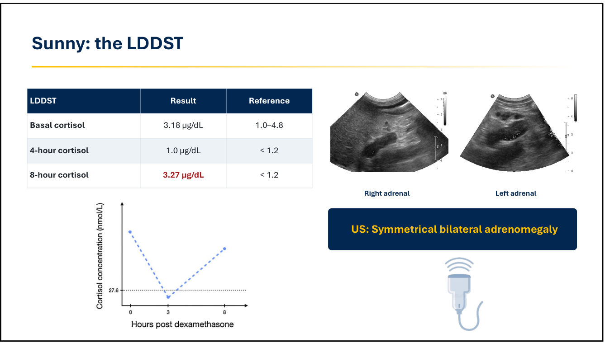
| LDDST | 結果 | 參考值 |
|---|---|---|
| 基礎皮質醇 | 3.18 µg/dL | 1.0–4.8 |
| 4 小時 | 1.0 µg/dL | < 1.2 |
| 8 小時 | 3.27 µg/dL | < 1.2 |
- 🎤 這是逃脫型（escape pattern）：T0 高、T4 回到參考範圍內、T8 又升高。10/7 講過，這個型態的陽性預測值不算高，但 Sunny 有很多其他支持庫欣的證據。
- 超音波：雙側腎上腺對稱性增大。
- 🎤 飼主不願意做 CT，所以依超音波的腎上腺型態推定為 PDH。
🎤 診斷與計畫
- 診斷：糖尿病、PDH、糖尿病性白內障合併水晶體誘發葡萄膜炎。
- 計畫：Trilostane q12h；繼續並調整胰島素；眼科用藥；兩個病用同一套排程監測。
- 🎤 開始 trilostane 時不要同時改胰島素：皮質醇下降後胰島素阻抗可能減輕。先開始 trilostane，看狗的反應；需要時再繼續加胰島素，真的控制不了才考慮換胰島素種類。
4. Trilostane 與合併監測
▾🎤 糖尿病犬使用 trilostane
- 0.5–1 mg/kg q12h。
- 一天兩次，不要一天一次：抑制皮質醇的效果只有 10–18 小時，BID 能更快控制症狀。🎤 合併糖尿病的狗，BID 比較容易讓庫欣控制得穩定（10/7 已經給過 BID 控制較好的圖）。
- 隨餐給：吸收好很多。
- 劑量不隨體重線性增加：不論體重多少，起始劑量上限 30 mg q12h。
🎤 庫欣與糖尿病的監測
| 庫欣 | 糖尿病 | |
|---|---|---|
| 主要工具 | 病史與理學檢查（ALIVE 臨床評分）；檢驗：給藥前皮質醇或 ACTH 刺激試驗（目標 1.5–5.5 µg/dL） | 連續血糖監測（CGM） |
| 時程 | 第一次回診 3–4 週 | 每 2 週一次，直到穩定 |
| 調整 | 改 trilostane 劑量或頻率 | 改胰島素劑量、頻率或種類 |
- 🎤 首先看臨床症狀，但很難判斷：PU/PD、多食等症狀，糖尿病、庫欣、高血脂都會造成，重疊很多。所以也需要客觀的檢驗方法：重複血檢、追蹤皮質醇（給藥前皮質醇或 ACTH 刺激試驗，限制 10/7 已討論過）。
- 🎤 為什麼要 CGM：只看皮質醇或幾個血糖值，很難分辨狗的症狀是來自糖尿病還是庫欣。先用 CGM 確認血糖控制好了，症狀還在的話，就知道要加強的是庫欣。
✍️ 筆記🎤 回診時間：講者 3–4 週 vs Bugbee 1–2 週
講者通常 3–4 週才做第一次庫欣回診。Bugbee 認為 1–2 週也可以。講者偏好 3–4 週，是因為他用低劑量起始，trilostane 過量的問題不多，所以大約一個月後才評估庫欣；糖尿病那一側則每 2 週換一次 Libre，直到穩定。
💡 補充 兩者其實不衝突：1–2 週回診的重點是安全（有沒有皮質醇過低的徵兆、電解質），3–4 週才是決定 trilostane 劑量的時間點。糖尿病犬開始 trilostane 後胰島素需求可能下降，這部分由每 2 週的 CGM 回診負責。
講者通常 3–4 週才做第一次庫欣回診。Bugbee 認為 1–2 週也可以。講者偏好 3–4 週，是因為他用低劑量起始，trilostane 過量的問題不多，所以大約一個月後才評估庫欣；糖尿病那一側則每 2 週換一次 Libre，直到穩定。
💡 補充 兩者其實不衝突：1–2 週回診的重點是安全（有沒有皮質醇過低的徵兆、電解質），3–4 週才是決定 trilostane 劑量的時間點。糖尿病犬開始 trilostane 後胰島素需求可能下降，這部分由每 2 週的 CGM 回診負責。
🎤 使用 CGM 的監測流程
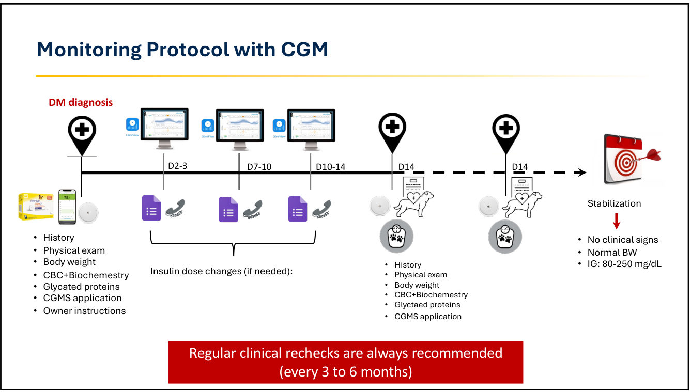
- 確診時：病史、理學檢查、體重、CBC＋生化、糖化蛋白、裝第一個 Libre、飼主衛教（Libre 與胰島素怎麼用）。
- D2–3、D7–10、D10–14：看 CGM 數據，視需要調胰島素。🎤 要把 Libre 用到最充分，不要等 14 天才調劑量。理想上每 2–3 天就調一次，尤其是非常穩定的基礎型胰島素，希望盡快改善控制。
- D14：病史、理學檢查、體重、CBC＋生化、糖化蛋白、換新的 Libre。每 2 週重複一次，直到穩定。
- 穩定標準：沒有臨床症狀、體重正常、IG 80–250 mg/dL。🎤 狗的血糖在這個範圍時，臨床症狀通常都控制得很好。如果這時還有症狀，就要加強庫欣的治療，而不是糖尿病。
- 穩定後仍要每 3–6 個月定期回診。🎤 飼主在家自己裝 Libre 之後，醫師可能就看不到這隻狗了。有庫欣等其他疾病時，回診要更頻繁，因為另一個病也需要追蹤。
🎤 Sunny：trilostane 和胰島素都往上調
- Trilostane 5 mg（0.77 mg/kg）→ 10 mg q12h（1.5 mg/kg）。🎤 因為仍有症狀、仍有符合庫欣的異常，皮質醇也還高。
- Lente 2.5 U（0.4 U/kg）→ 9 U q12h（1.4 U/kg）。
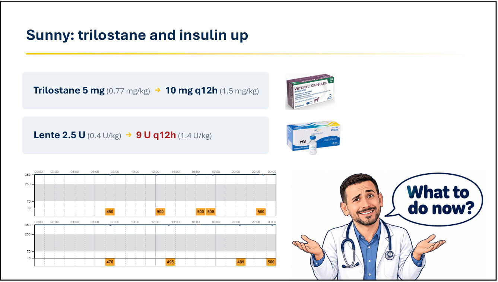
- 🎤 講者問台下：要加 trilostane？加胰島素？還是換胰島素？台下回答「換胰島素」。
5. 胰島素選擇：換成 NPH
▾🎤 胰島素藥理學：效力與作用時間
| 類別 | 產品 |
|---|---|
| 「短效」 | Humulin R、Actrapid、Lispro |
| 「中效」 | NPH（Humulin、Novolin）、Lente（Vetsulin/Caninsulin）、Detemir（Levemir）、Glargine 100 U/mL（Lantus）、PZI（ProZinc） |
| 「長效」（基礎型） | Glargine 300 U/mL（Toujeo）、Degludec（Tresiba） |
- 圖示：效力與作用時間呈反向關係，作用越長、效力越低。
- 🎤 作用時間會隨劑量改變：同一種胰島素，劑量加高，作用時間也會拉長。
- 🎤 慢性糖尿病管理不用短效胰島素，主要用中效和長效。
- 🎤 胰島素阻抗的狗，講者以前的首選是 detemir，因為它比其他胰島素效力強很多。但 detemir 在歐洲和美國已經停產（亞洲是否還有不清楚），這是很大的問題。
- 🎤 基礎型胰島素效力比中效低。嚴重阻抗的狗，講者也會考慮中效胰島素，所以替 Sunny 選了 NPH。
🎤 NPH 胰島素
- 重組人類胰島素（100 U/mL），中效，作用約 4–10 小時。
- 劑量 0.25–0.5 U/kg BID，用人用 U-100 胰島素針筒。
- Lente vs NPH 研究：每針中位劑量 Lente 0.61 U/kg（0.34–0.92） vs NPH 0.49 U/kg（0.23–0.68），P = 0.032。
- 🎤 達到良好控制所需的 NPH 劑量比 Lente 少，代表 NPH 效力較強，可能是目前手上效力最強的胰島素。缺點是一定要一天打兩次，不像基礎型胰島素。
🎤 血糖最低點時間：NPH 作用較短
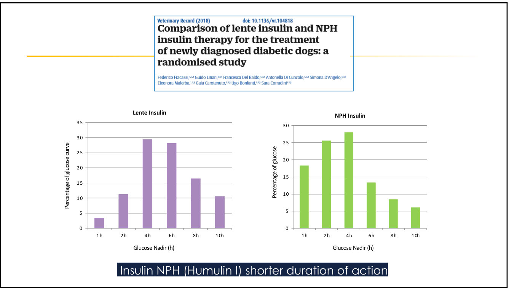
- NPH 的最低點大約在給藥後 2–4 小時，作用時間比較短。
- 🎤 NPH 的問題：作用可能撐不滿 12 小時。血糖控制約 8–10 小時，之後又升上來。
🎤 回到 Sunny：換 NPH 後重新評估庫欣
| 用藥中 ACTH 刺激試驗 | 結果 | 參考值 |
|---|---|---|
| 刺激前皮質醇 | 1.7 µg/dL | 1.0–4.8 |
| 刺激後皮質醇 | 3.8 µg/dL | 1.5–5.5 |
- 庫欣已控制，但仍持續高血脂：膽固醇 420 mg/dL（140–350）、三酸甘油酯 378 mg/dL（32–120）。
- 🎤 「還能多做什麼？」糖尿病和庫欣都治療了，高血脂還是沒下來。
6. 高血脂與 fenofibrate
▾🎤 為什麼要治療持續的高血脂
- 講者常用 fenofibrate 和 bezafibrate，對控制高血脂效果很好。
- 像 Sunny 這樣持續高血脂的狗，講者擔心的是胰臟炎，所以只要高血脂持續就會治療。
🎤 Fenofibrate 也能幫助糖尿病嗎？（O'Kell 等，JVIM 2025）
- 16 隻自然發生、無併發症的糖尿病犬，fenofibrate 6–10 mg/kg q24h，共 21 天。🎤 是 University of Florida 團隊（Mott 的同事）做的。
| 指標 | 變化 | P |
|---|---|---|
| 三酸甘油酯 | ↓ 36% | 0.002 |
| 膽固醇 | ↓ 20% | < 0.0001 |
| 血清 LPS（脂多醣） | ↓ 15% | 0.03 |
| HDL 比例 | ↑ 18.5% | < 0.0001 |
- 血糖控制沒有改變：平均 IG 299 → 306 mg/dL（P = 0.1）；血清細胞激素和 cPLI 也沒變。
- 🎤 LPS 是腸道屏障受損的指標，糖尿病犬可能有腸道屏障破壞，而 fenofibrate 可能改善腸道屏障。
✍️ 筆記🎤 講者的看法和研究結論不同
解讀這篇時要小心：收的是穩定的糖尿病犬，而且刻意排除共病，是非常「標準、穩定」的族群。在已經穩定的狗身上，本來就很難證明血糖控制有改變。講者的印象是：有些狗用了這類藥之後，尤其是有高血脂的狗，疾病控制會比較好。所以他自己還是會用。
💡 補充 研究另外只追蹤 21 天、只有 16 隻，統計檢定力有限；「沒偵測到差異」不等於「沒有效果」。
解讀這篇時要小心：收的是穩定的糖尿病犬，而且刻意排除共病，是非常「標準、穩定」的族群。在已經穩定的狗身上，本來就很難證明血糖控制有改變。講者的印象是：有些狗用了這類藥之後，尤其是有高血脂的狗，疾病控制會比較好。所以他自己還是會用。
💡 補充 研究另外只追蹤 21 天、只有 16 隻，統計檢定力有限；「沒偵測到差異」不等於「沒有效果」。
🎤 Sunny 最終方案
| 藥物 | 劑量 |
|---|---|
| Trilostane | 10 mg q12h（1.5 mg/kg） |
| NPH 胰島素 | 10 U q12h（1.5 U/kg） |
| Fenofibrate | 60 mg q24h（9.2 mg/kg） |
- 🎤 結果比之前好很多。這是一隻持續高血糖的胰島素阻抗犬，原因可能是庫欣，也可能是高血脂；有時候不治療，高血脂就一直存在。這個藥物組合讓糖尿病達到良好控制，飼主對結果非常滿意。
- Fenofibrate 的用藥門檻、肝指數、要用多久：見第 13 節 Q3–Q5。
7. Sierra 與血糖變異度
▾🎤 病例：Sierra
- 騎士查理王小獵犬（CKCS），已絕育母犬，6 歲，6 kg，BCS 4/9。
- 豬源 Lente（Caninsulin）1 U q12h，商業糖尿病飼料。
- 🎤 有庫欣但沒有胰島素阻抗，類似「蜜月期」，胰島素劑量很低。主要問題是血糖變異度：有一天血糖整天偏高；另一天晚上高、白天又掉下來。
🎤 飼主看到低血糖會做什麼？不管你怎麼交代，飼主看到血糖低就會餵餅乾、餵食物。結果變異度更大，情況更複雜。所以改善血糖變異度不只是為了狗（同時有低血糖風險和持續高血糖），也是為了飼主：血糖這樣上上下下，飼主會抓狂。
🎤 血糖變異度（GV）的定義
- GV 指血糖的起伏，包括低血糖和高血糖事件，可以發生在一天之內（日內變異），也可以發生在不同天之間（日間變異）。
- 人醫近年特別重視 GV，正逐漸成為另一個血糖控制目標，因為它和短期及長期的糖尿病併發症有關（Suh & Kim 2015）。
- 🎤 犬貓還不確定。已知在貓，降低 GV 可能和較高的緩解機率有關。相關研究越來越多，GV 可能也應該成為我們的目標，很多病例都還有改善空間。
🎤 血糖變異度的原因（Reusch 2019）
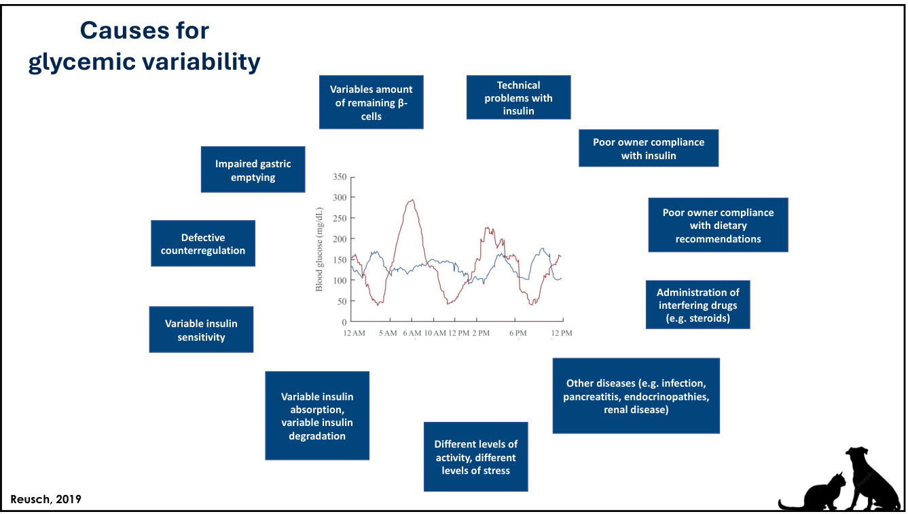
| 可以處理（圖右側） | 無法處理（圖左側，與糖尿病本身有關） |
|---|---|
|
胰島素技術問題 飼主沒確實施打胰島素 飼主沒遵守飲食建議 使用干擾性藥物（例如類固醇） 其他疾病（感染、胰臟炎、內分泌疾病、腎病） 活動量與壓力程度不同 |
殘存 β 細胞數量不同 胃排空障礙 反調節機制失常 胰島素敏感度變動 胰島素吸收與降解不穩定 |
- 🎤 飲食管理可以改善 GV。最重要的可處理因素之一是其他疾病，而庫欣是糖尿病犬血糖變異度最常見的原因之一，這就是為什麼在這場談 GV。
🎤 CGM 實例：健康犬 vs 糖尿病犬
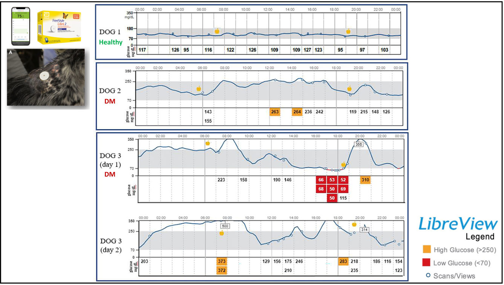
- 健康犬：血糖維持在很窄的範圍內，因為血糖上升時胰島素分泌就跟著增加。
- 糖尿病犬一定會有波動，只是程度不同。Dog 2 相當穩定；Dog 3（用 Lente）波動明顯，和 Sierra 一樣。
🎤 改善血糖控制與變異度的策略
- 胰島素的選擇與施打方式（第一件可以做的事）
- 飲食：種類與餐次
- SGLT-2 抑制劑（狗可以用，見第 10–11 節）
- GLP-1 受體促效劑（🎤 主要在貓，有研究顯示可降低糖尿病貓的 GV）
8. 基礎型（長效）胰島素
▾🎤 犬用基礎型「長效」胰島素
- 「長效、藥動學曲線平坦、每天打一次」：Glargine U300（Toujeo；Tardo 2024）、Degludec（Tresiba；Mott 2025）。
- 重組人類胰島素類似物，設計來模擬基礎胰島素分泌。
- 皮下注射後緩慢、持久釋放：曲線平坦、作用時間長、日間變異較低（Miller 2021）。
- 🎤 要降低 GV，這兩種是目前最好的選擇。
🎤 Miller 等 JVIM 2021：三種胰島素的日間變異
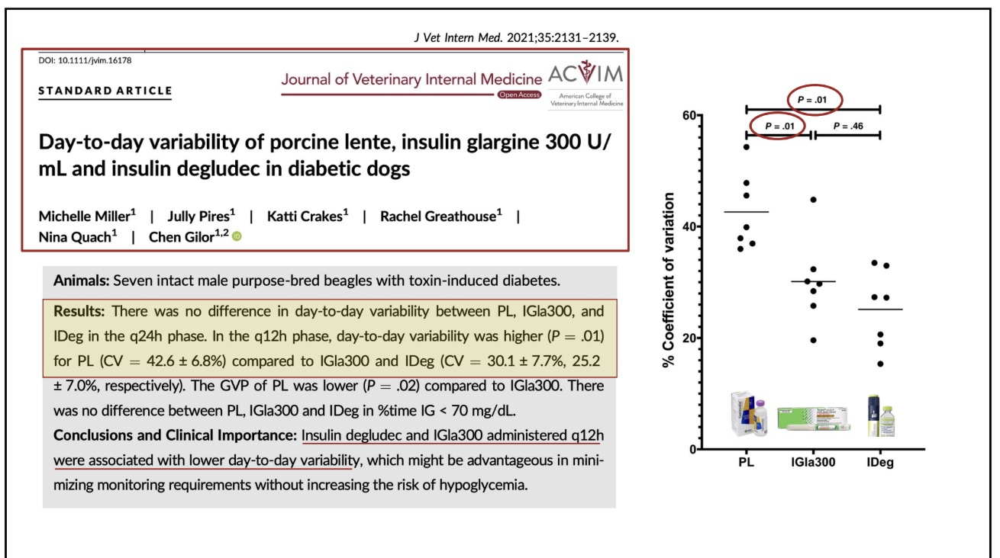
- 對象：7 隻未去勢的實驗用米格魯公犬，糖尿病由藥物誘發。
- q24h 階段：三種胰島素的日間變異沒有差異。
- q12h 階段：PL 的日間變異明顯較高（P = .01）。CV：PL 42.6 ± 6.8%、IGla300 30.1 ± 7.7%、IDeg 25.2 ± 7.0%。IGla300 vs IDeg 沒有差異（P = .46）。
- PL 的 GVP（一天內的波動）比 IGla300 低（P = .02）。
- 三者的 IG < 70 mg/dL 時間比例沒有差異。
- 結論：degludec 和 IGla300 以 q12h 施打時日間變異較低，可能減少監測需求，而且不增加低血糖風險。
- 🎤 CV 是衡量日間變異的指標。Lente 的 CV 比 glargine 和 degludec 高很多，所以想降低變異度就要用基礎型胰島素。
💡 補充 長效胰島素的優勢只出現在 q12h；q24h 時三者沒有差異。Lente 也不是全面輸：一天內的波動（GVP）反而比 IGla300 小。研究限制：只有 7 隻、藥物誘發、沒有胰島素阻抗或共病，臨床病例的變異來源多很多。
🎤 Glargine U300 vs Degludec
| 項目 | Glargine U300（Tardo, JVIM 2024） | Degludec（Mott, JVIM 2025） |
|---|---|---|
| 研究 | 95 隻，用 CGM 監測 | 33 隻，用 CGM 監測 |
| 施打頻率 | q24h 56/95（59%），無共病時 72%；q12h 39/95（41%） | q24h 28/33（84%）；q12h 5/33（16%） |
| 劑量 | 中位 1.9 U/kg/day（0.2–5.2） | 中位 1.3 U/kg/day（0.4–2.2） |
| 需加打餐前胰島素 | 5 隻（5%） | 1 隻 |
| 臨床低血糖 | 6 隻（6%） | 1 隻 |
| 達到控制的時間 | 中位 16 天（3–99） | 中位 14 天（3–32） |
| 費用（美國 Davis，GoodRx） | 筆型每單位約 $0.25 | 每單位約 $0.10；加州胰島素方案 30 天份 $35 |
- 🎤 Mott 已經講過這兩種胰島素，這張只是總結。再提醒一次：它們效力比其他胰島素低，很容易就用到 glargine 約 2 U/kg/day、degludec 超過 1 U/kg/day。
- 🎤 講者不認為哪一種比較好，兩種都是很好的工具。依你所在國家的價格，選比較便宜的那一種。
🎤 Glargine U300 研究中的共病
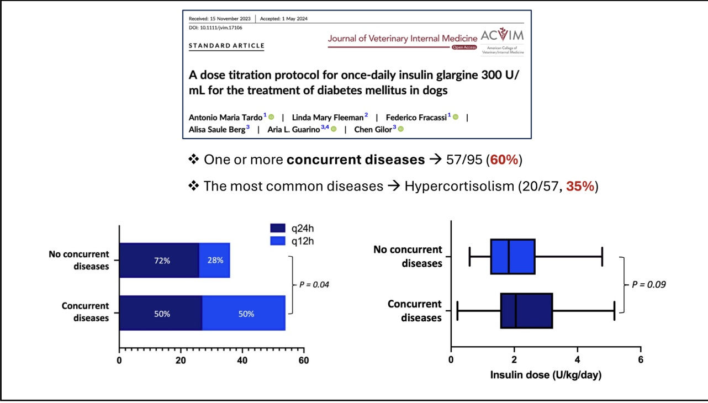
- 60%（57/95）有一種以上共病；最常見的是庫欣（20/57，35%）。
- 施打頻率：無共病 q24h 72%、q12h 28%；有共病 q24h 50%、q12h 50%（P = 0.04）。
- 劑量：有共病組較高，但未達顯著（P = 0.09）。
- 🎤 可以和飼主討論：開始基礎型胰島素時可以先一天一次，但如果狗也有庫欣或其他疾病，大約一半最後會需要一天兩次。共病會造成胰島素阻抗，所以達到控制所需的劑量可能也比較高。
9. 基礎型胰島素：起始劑量與轉換
▾🎤 起始劑量與轉換規則
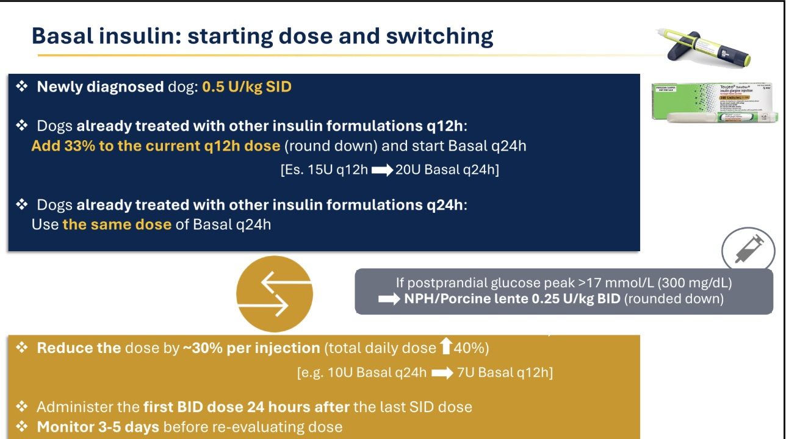
| 情境 | 做法 | 例子 |
|---|---|---|
| 新診斷的狗 | 0.5 U/kg SID | |
| 原本用其他胰島素 q12h | 目前 q12h 的每針劑量 +33%（無條件捨去），改成基礎型 q24h | 15 U q12h → 20 U q24h |
| 原本用其他胰島素 q24h | 基礎型 q24h 用相同劑量 | |
| 餐後血糖高峰 > 300 mg/dL（17 mmol/L） | 加打 NPH 或豬源 Lente 0.25 U/kg BID（無條件捨去） | |
| 基礎型 q24h 改成 q12h | 每針劑量 −30%（每日總量約 +40%）；第一次 BID 在最後一次 SID 的 24 小時後；觀察 3–5 天再評估 | 10 U q24h → 7 U q12h |
- 🎤 這張是給大家帶回去用的總結，因為 10/7 或 10/8 有人問過怎麼從一種胰島素換成另一種。
💡 補充 規則背後的邏輯：
- q12h → q24h：15 U × 2 = 30 U/day 改成 20 U/day，每日總量其實減少約 1/3。長效胰島素曲線平坦、作用長，總量較少就能涵蓋 24 小時；一律捨去是安全原則。
- q24h → q12h：需要改 BID 的狗通常是一針撐不住 24 小時，所以總量要增加；但長效胰島素作用接近或超過 24 小時，BID 會疊加，所以每針要減少。
- 24 小時後才打第一劑 BID、觀察 3–5 天：避免疊加，並讓長效胰島素達到穩定狀態再調整。
- Toujeo 是 U-300：一定要用原廠筆型施打，不能用 U-100 針筒抽，否則劑量會變 3 倍。
- 小型犬：筆型以 1 U 為一格，計算結果低於 1 U 時要調整做法（例如 Sierra）。
🎤 Sierra 的結果：Degludec 1 U q12h、增加餐次
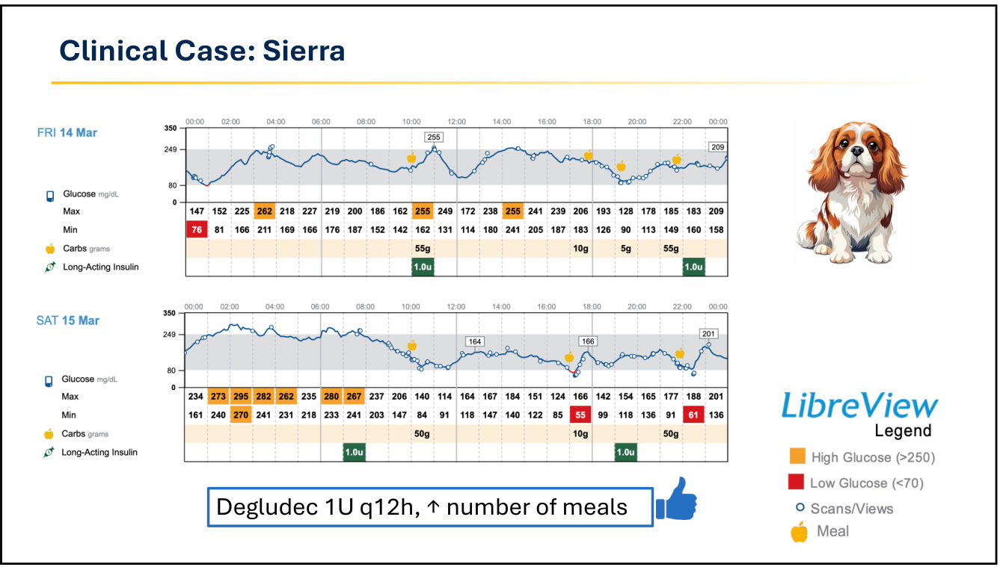
- 🎤 先用基礎型胰島素一天一次，但一次不夠，夜間有低血糖讀數，所以改成一天兩次。改 BID 後血糖控制好很多，仍有一些變異，但比之前好很多。
- 🎤 同時增加餐次。這很常見，Bugbee 也講過：基礎型胰島素不是設計來對付餐後高血糖的。如果看到明顯的餐後高峰，可以建議飼主一天多餵幾餐，通常能得到比較平的血糖曲線。
10. Dora 與 SGLT-2i 文獻
▾🎤 病例：Dora
- 診斷：庫欣（PDH）、高血脂（🎤 非常頑固的高血脂）。
- 治療：
- Detemir（Levemir）6 U BID（1 U/kg）
- Trilostane（Vetoryl）12 mg BID（2 mg/kg）
- Bezafibrate 10 mg/kg SID
- 腸胃道低脂飲食
- 糖尿病控制不佳：胰島素阻抗造成 IG 持續偏高，加上血糖變異度大。
🎤 Dora 的 CGM：detemir 6 U（1 U/kg）
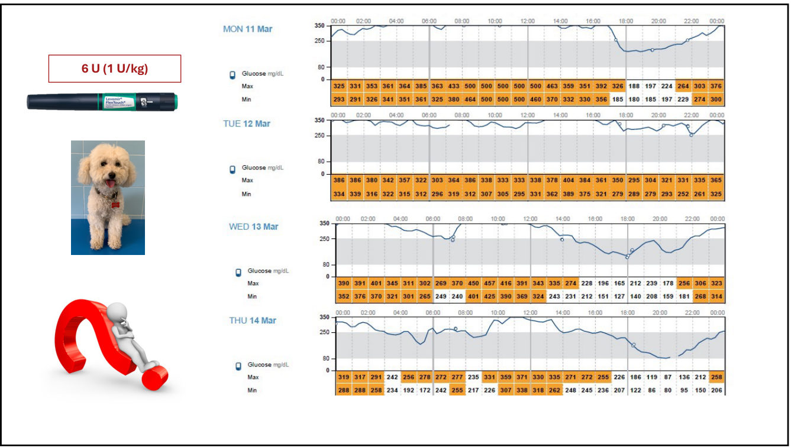
- 🎤 血糖持續偏高，大部分時間都高；某一天好一點，甚至掉到低範圍，但整體控制不好。
- 🎤 detemir 1 U/kg 是非常高的劑量，因為它的效力比其他胰島素強很多。胰島素阻抗到這個程度，已經沒辦法再靠胰島素改善了。
- 🎤 講者的選擇：考慮 SGLT-2 抑制劑，用來降低胰島素劑量、改善糖尿病控制。
SGLT-2 抑制劑的作用機轉
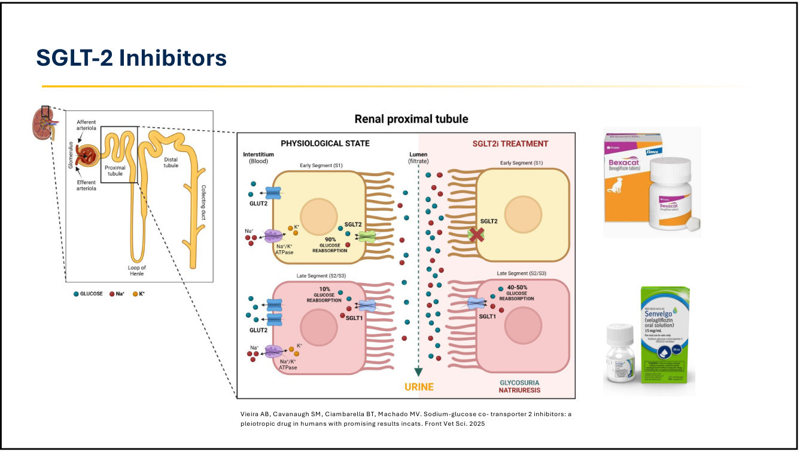
- 💡 補充 近曲小管前段（S1/S2）靠 SGLT2 回收約 90% 過濾的葡萄糖；抑制 SGLT2 後葡萄糖與鈉從尿中排出（糖尿、排鈉）。降糖作用不依賴胰島素，所以胰島素阻抗再強也有效。
- 圖右為貓用產品：bexagliflozin（Bexacat）、velagliflozin（Senvelgo）。在犬屬仿單外使用。
🎤 Canagliflozin 加 NPH（Box 等，JVIM 2024）
- 5 隻狗（3 隻絕育公、2 隻絕育母），糖尿病穩定。NPH 0.8 U/kg（0.4–1.1）q12h，劑量維持 20 個月不變。
- Canagliflozin 口服每天一次（約 2–3 mg/kg）。
- 10 天研究期間：沒有低血糖或 UTI 症狀；沒有嘔吐、腹瀉；喝水、排尿、食慾沒變；體重 T0 11.9 kg（7.4–42） vs T10 12 kg（7.2–42.5），P > 0.05。
- 結果：IG 顯著下降；BOHB 全部正常，沒有任何一隻發生 DKA。
- ⚠️ 低 IG 讀數的頻率和嚴重度增加 → 胰島素加上 canagliflozin 時要減少胰島素劑量。🎤 作者建議開始用藥時就降低胰島素，否則可能出現急性低血糖事件。
- 🎤 只有 5 隻，是很小的病例系列。
🎤 Enavogliflozin（DWP16001）：韓國團隊的兩篇研究
| An 等 2024（前導研究） | An 等 2025（多中心 RCT） | |
|---|---|---|
| 對象與追蹤 | 19 隻穩定糖尿病犬，追蹤 1 年 | 61 隻糖尿病犬，追蹤 2 個月 |
| 血糖 | 空腹血糖、果糖胺下降 | 果糖胺、HbA1c 下降 |
| 胰島素需求 | 下降 | 下降（不顯著） |
| 體重 | 3 個月後顯著下降 | 沒有改變 |
| 安全性 | BOHB < 1 mmol/L；沒有臨床低血糖 | 4 隻出現生化性低血糖 |
- 🎤 兩篇結果很類似：血糖控制改善、果糖胺改善、胰島素需求明顯下降。根據這些資料，決定讓 Dora 開始用 SGLT-2i。
11. Dora 結果與 Del Baldo 病例系列
▾🎤 開始 velagliflozin 後
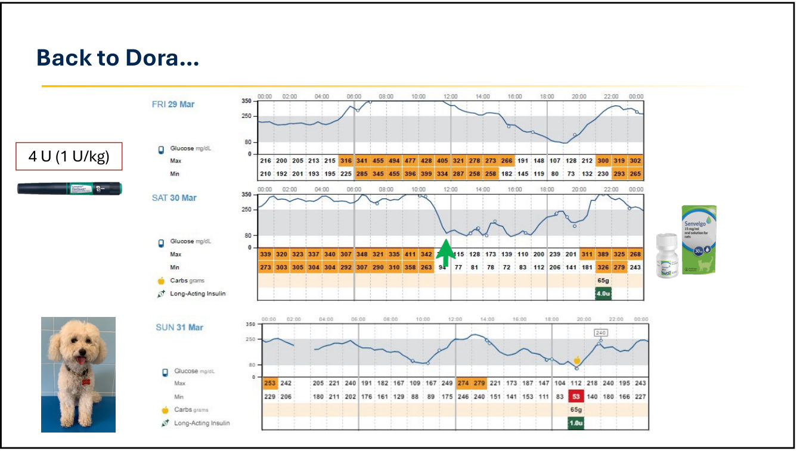
- 🎤 開始用藥後血糖立刻下降；隔天控制較好，但仍有變異度。之後幾天也有血糖往下掉的情形，也出現了一些低血糖讀數。
- 🎤 因為出現低血糖讀數，detemir 從 6 U 降到 4 U，再降到 3 U BID。
🎤 Detemir 3 U BID ＋ velagliflozin
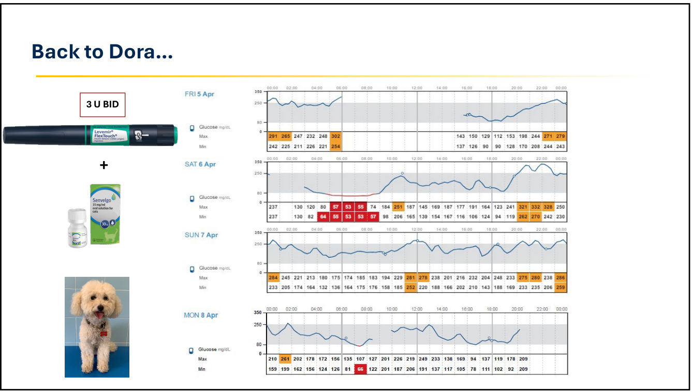
- 🎤 維持 velagliflozin 加 detemir，血糖控制好很多。
📷 現場🎤 Del Baldo 等（審稿中）：SGLT-2i 輔助治療控制不佳的糖尿病犬
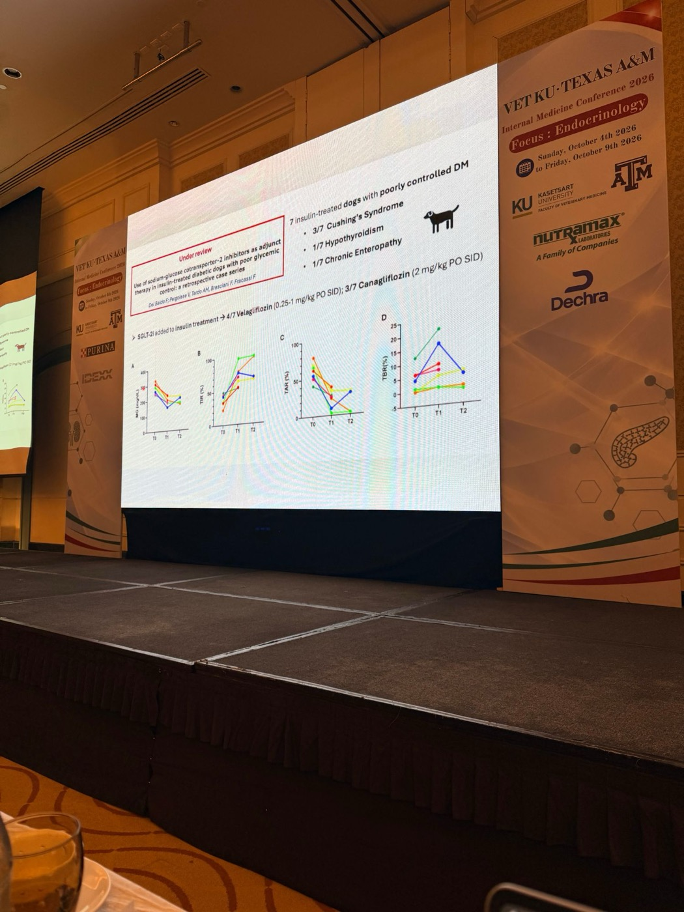
- 回溯性病例系列，🎤 目前在 JVIM 小幅修改（minor revision）階段。Dora 是其中一隻。
- 7 隻打胰島素但控制不佳的狗。🎤 和前面的研究最大的不同是族群：全部是控制不佳的糖尿病犬。共病：3/7 庫欣、1/7 甲狀腺功能低下、1/7 慢性腸病。
- 用藥：4/7 velagliflozin（0.25–1 mg/kg PO SID）、3/7 canagliflozin（2 mg/kg PO SID）。
- 結果（資料取自 Libre 的 AGP 報告）：平均血糖在 T1（1 個月）下降、T2（2 個月）維持；TIR 顯著改善、TAR 顯著下降。
- ⚠️ 但部分狗的 TBR 也上升，可能出現低血糖讀數，甚至低血糖，使用這個組合時要小心。
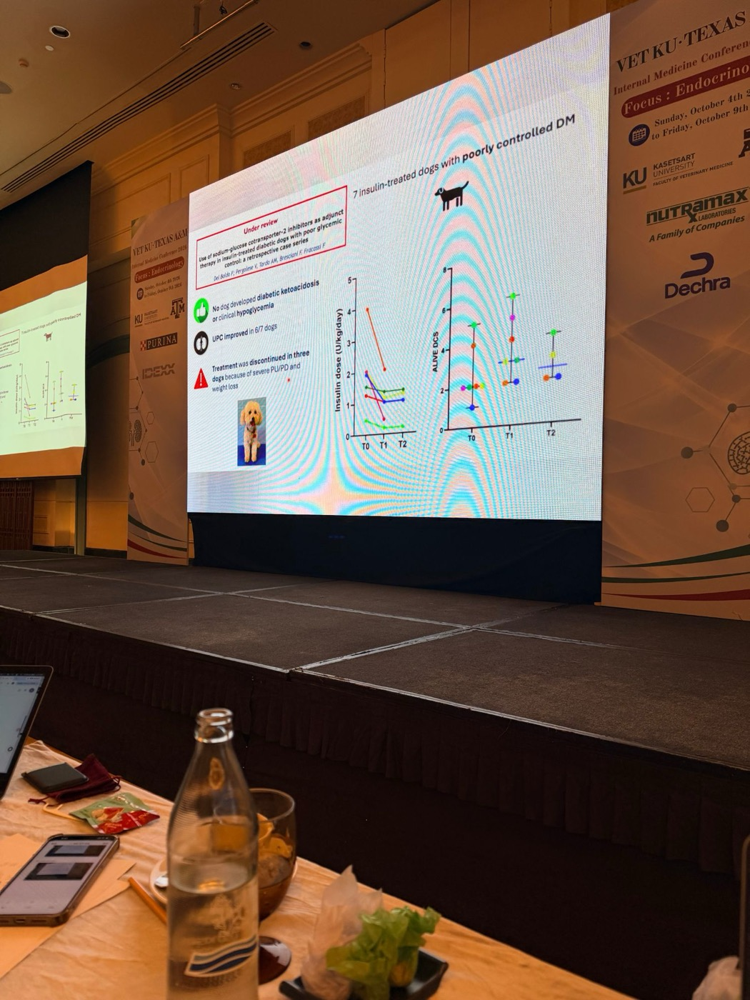
- 👍 沒有任何一隻發生 DKA 或臨床低血糖（只有低血糖讀數，沒有臨床症狀）。
- 6/7 隻 UPC 改善。
- 大多數狗的胰島素需求下降。
- ⚠️ 3 隻因嚴重 PU/PD 和體重下降而停藥。🎤 研究的主要問題在 ALIVE 臨床評分：有些狗體重下降、PU/PD，原因是 velagliflozin 或 canagliflozin。Dora 也是因為 PU/PD 和體重下降而停用 velagliflozin 的其中一隻，有些狗體重掉得很明顯。
🎤 要治療數字，還是治療症狀？講者：「我要治療症狀。」
他認為這個研究的問題主要在劑量：一開始用 velagliflozin 1 mg/kg，這是貓的劑量，但狗對它比貓敏感很多。現在他們用的 velagliflozin 劑量低很多，副作用仍然存在，但比這批病例輕微。
SGLT-2i 仍是一個選項，他們還在研究最適合狗的劑量，也在試其他 SGLT-2i，找最適合的藥物。
他認為這個研究的問題主要在劑量：一開始用 velagliflozin 1 mg/kg，這是貓的劑量，但狗對它比貓敏感很多。現在他們用的 velagliflozin 劑量低很多，副作用仍然存在，但比這批病例輕微。
SGLT-2i 仍是一個選項，他們還在研究最適合狗的劑量，也在試其他 SGLT-2i，找最適合的藥物。
✍️ 筆記 和之前場次（04）的差異：之前的研究（Box 2024、An 2024/2025）是在穩定的糖尿病犬上確認安全性、能不能省胰島素；這個研究是控制不佳、有共病的困難病例，追蹤到 2 個月，看到了 Box 10 天研究沒看到的 PU/PD 和體重下降。
【更正】 原本推測 Dora 是用 Toujeo 搭配 SGLT-2i；依逐字稿與講義 p.36 的筆型，Dora 用的是 detemir（Levemir）＋ velagliflozin。講義 p.42 的「4 U（1 U/kg）」應是投影片標示沿用前一張，實際是 detemir 從 6 U 減到 4 U。
【更正】 原本推測 Dora 是用 Toujeo 搭配 SGLT-2i；依逐字稿與講義 p.36 的筆型，Dora 用的是 detemir（Levemir）＋ velagliflozin。講義 p.42 的「4 U（1 U/kg）」應是投影片標示沿用前一張，實際是 detemir 從 6 U 減到 4 U。
12. 預防庫欣犬發生糖尿病
▾🎤 Miceli 等 2012：低劑量 detemir
- 「注意！空腹血糖 > 100 mg/dL」
- 介入性研究，26 隻 PDH 犬：
| 分組（空腹血糖） | 結果 |
|---|---|
| < 100 mg/dL | 沒有發生糖尿病 |
| 100–180，給 detemir 0.1 U/kg/day | 沒有發生糖尿病 |
| 100–180，未治療 | 7 隻中 6 隻變成糖尿病 |
- 未給胰島素的高血糖犬，發生糖尿病的風險約高 13 倍。
- 🎤 「可以預防糖尿病嗎？大概可以。」糖尿病前期（血糖 > 100）的狗用 detemir 是安全的選項。也許我們應該更早給一點胰島素，或考慮其他治療。
🎤 「我們能預防糖尿病嗎……但要怎麼做？」
- 漫畫中的選項：胰島素、SGLT-2 抑制劑、飼料、GLP-1 受體促效劑；牆上寫著「跟著你的心走……但證據在哪裡？」
- 🎤 講者認為 SGLT-2i 可能很適合這些狗：它們還有內生性胰島素分泌，和糖尿病貓的情況類似。
- 🎤 SGLT-2i 的另一個好處是可以改善蛋白尿。病例系列中大部分狗開始 velagliflozin 或 canagliflozin 後蛋白尿都改善了。所以對庫欣犬可能有雙重適應症：預防糖尿病、治療蛋白尿。
💡 補充 Miceli 2012 只有 26 隻狗；用 SGLT-2i 預防糖尿病目前沒有犬隻研究資料，屬於講者的推論。
13. 課後 Q&A
▾Q1｜Sunny 換成 NPH，可以改用基礎型胰島素，或和 NPH 合併使用嗎？
🎤 當然可以。講 NPH 只是給另一個選擇，他們現在用基礎型胰島素多很多。但 Sunny 的主要問題是嚴重胰島素阻抗：如果 Lente 已經用到 1 U/kg 以上，換成基礎型胰島素可能要用到 4–5 U/kg。這本身不是大問題，但要看品種，如果是大型犬，劑量會很大。NPH 是一個便宜、效力又比基礎型強很多的選項，缺點是要一天打兩次。也可以用 basal-bolus（基礎型加餐前胰島素）合併，但對飼主比較複雜：要用兩種胰島素，一天通常至少打三針。沒有一種胰島素適合所有病例，每隻狗都不一樣。
Q2｜糖尿病或有其他共病的狗，你偏好 ACTH 刺激試驗還是 LDDST？還是兩個一起做？
🎤 有其他疾病時，LDDST 的特異性低很多，如果只看這點，ACTH 刺激試驗可能是比較好的選擇。講者通常希望有更多資訊，所以多半是一種內分泌檢查加上影像，而且盡量取得腫瘤本身的影像（腦下垂體或腎上腺）。例如影像看到腦下垂體腫瘤，再加上一個陽性檢查，就沒有其他鑑別診斷了。如果沒辦法做影像，檢查結果又落在灰色地帶，就再做另一種檢查。他認為 ACTH 刺激試驗對這些狗是不錯的檢查。
Q3｜糖尿病合併庫欣、三酸甘油酯和膽固醇偏高時，什麼數值開始用 fenofibrate？ ✍️ 我的提問
🎤 講者沒有特定的數值。他的做法是：先盡可能治療好庫欣和糖尿病；如果高血脂持續，即使是輕度也會治療。如果很嚴重，又是另一個用藥理由：有些庫欣合併糖尿病的狗，確診時高血脂就非常嚴重，這時可以一開始就用 fenofibrate，以避免高血脂的併發症，最重要的就是胰臟炎。庫欣合併糖尿病的狗如果再發生胰臟炎，管理會變得很複雜，預後也可能很差，飼主可能因為種種問題失去動力。總結：沒有特定切點，但兩個病都治療後高血脂仍持續，就會用。
Q4｜Fenofibrate 可能造成肝指數上升，發生時有什麼替代藥物？
🎤 講者大量使用 bezafibrate 和 fenofibrate，自己從來沒看過肝指數上升，但文獻有報告，所以是可能的併發症。問題是目前沒有其他好的降血脂藥，其他藥物在犬貓都沒有好好研究過。文獻和他自己的經驗都是 fibrate 類相當安全，發生率通常低於 5%。可以試著在兩種 fibrate 之間互換，或降低劑量：劑量範圍 4–10 mg/kg，可以從低劑量開始，看有沒有效，沒效再往上加。
Q5｜兩隻高三酸甘油酯、高膽固醇合併脂肪肝的狗，用 fibrate 約兩個月後數值恢復正常。要用多久？要終身使用嗎？需要減量嗎？
🎤 最近一篇長期研究顯示，長期使用沒有併發症，所以講者通常讓狗一直吃下去。不過如果是在確診時同時開始糖尿病和庫欣的治療、又同時開始 fibrate，之後可以試著停藥看看。能停藥或減藥，對病患和飼主的花費都比較好。他會追蹤肝指數；這些病患本來就需要定期回診。不要忘了回診：糖尿病的狗有時候只看血糖，醫師根本沒看到狗。他會至少每 3–6 個月看一次，檢查這些藥有沒有造成問題。也可以試著停藥，沒有特定的建議；有些狗吃這個藥狀況很好，一停藥高血脂又回來。
Q6｜之前被教要等血糖比較穩定後才做 ACTH 刺激試驗或 LDDST。血糖還很高時可以做嗎？
🎤 理想上要先控制糖尿病，因為糖尿病本身是一種壓力狀態，光是這個壓力就可能讓檢查呈陽性。但有時候糖尿病就是控制不下來，因為控制不良正是來自另一個疾病，就像 Sunny。這時要診斷庫欣，而且不能只靠一個檢查。如果狗有脫毛、持續多食、持續高血脂、腎上腺異常等符合庫欣的表現，再加上陽性檢查，那就是庫欣，不用懷疑。要把所有證據放在一起看，而不是只看檢查數字；同時記得疾病本身可能造成偽陽性。講者通常會先管理糖尿病幾週，如果控制不了，才去驗庫欣。
Take-home、更正表與參考資料
▾Take-home
- 糖尿病犬打胰島素沒反應時，先找庫欣和高血脂，不要只是一直加胰島素。
- 庫欣犬空腹血糖 > 100 mg/dL 就是糖尿病前期；低劑量 detemir 可能預防糖尿病。
- Trilostane 低劑量 BID、隨餐；開始時不同時改胰島素；庫欣 3–4 週評估，糖尿病每 2 週 CGM、每 2–3 天調劑量。
- 血糖已在 80–250 仍有症狀 → 加強庫欣治療。
- 嚴重阻抗：考慮 NPH（效力強、便宜，但要 BID、作用 8–10 小時）。
- 變異度大：基礎型胰島素（選便宜的），有共病者約一半需要 BID；配合增加餐次。
- 持續高血脂要治療，主要是預防胰臟炎；fibrate 4–10 mg/kg，肝指數上升少見（< 5%）。
- SGLT-2i 有潛力（TIR 改善、胰島素減量、UPC 改善），但要減胰島素、注意 PU/PD 與體重下降；犬的劑量要比貓低很多。
【更正】 逐字稿轉文字錯誤對照
| 逐字稿 | 正確 |
|---|---|
| hyperproliferism / hypercoagulism / hyperprolactinism / hypoproteinemia / hypoketosis / hyperkinesis | hypercortisolism（庫欣） |
| Dr. Michele / Dr. Minceri（阿根廷） | Miceli |
| shell insulin | glargine U300 研究 |
| PUD / UPT / PPD / CVD / QPD / PUPD / UBD | PU/PD |
| insulmia | glucosuria（尿糖） |
| sudden appearance of color | cataract（白內障） |
| glycated blood glucose（> 100） | fasting blood glucose |
| BCCR | UCCR |
| PTH / GH（腦下垂體 vs 腎上腺） | PDH / ADH |
| non-cached premenstruals | intact females（未絕育母犬） |
| Sammy / Sonia / Sandy / Sanding（Sunny 段落） | Sunny |
| Tara | Sierra |
| Nora / Sonia（Dora 段落） | Dora |
| renal bed / the bed | referring vet（轉診獸醫） |
| polydactyly | polyphagia（多食） |
| UBI | uveitis（葡萄膜炎） |
| fructose moi | fructosamine |
| urine specific gravity was 120 | 1.020 |
| CTSD test / tonsil suppression test / PLD DSD | ACTH stimulation test / dexamethasone suppression test / LDDST |
| pushing / bushing / cushion | Cushing's |
| 10 zero / 10 eight | T0 / T8 |
| adrenal medullary | adrenomegaly（腎上腺增大） |
| triamcinolone / triostat / thyroid stand / fasting | trilostane |
| trial of 10.5 milligram | trilostane 5 mg（講義 p.16） |
| sulfonyl medication | 眼科用藥（葡萄膜炎） |
| Doctor Pak | Dr. Bugbee |
| libra / liver / delivery graph / liberated alpha | Libre（CGM） |
| pre-tailus | pre-trilostane（給藥前） |
| hypervolemia / polycythemia（症狀重疊） | hypercortisolism / hyperlipidemia |
| hypoglycemia（Sunny「仍有異常」、Fenofibrate Q3「嚴重」） | hyperlipidemia / hypercortisolism（依上下文） |
| can insulin / lent / Caninsulin | Lente（Caninsulin/Vetsulin） |
| MPH / STH | NPH |
| phenol fiber / fabric / beta fiber / depenofibrate / phenolphthaleate / phenytoin / phenobarbital / beta-hibret / five layer | fenofibrate / fibrates / bezafibrate |
| lipoprotein apheresis | LPS（lipopolysaccharide，脂多醣） |
| Dr. Mote / Doctor Mont / Dr. Moore | Dr. Mott |
| Doctor Baghi / Dr. Bajpai | Dr. Bugbee |
| hypolipidemia | hyperlipidemia |
| dementia of this patient | management（飼主對結果很滿意） |
| thin cap | cats（貓） |
| GLP-2 inhibitors / H I T inhibitors / GCF2 / H2R inhibitors | SGLT-2 inhibitors |
| largein / detre / tricyclic / babrolac | glargine / degludec |
| Tujiao | Toujeo |
| most of the cases it was hypothyroidism | hypercortisolism（講義 p.31：35%） |
| 70.2 percent | 72% |
| a million dosage of two units per kid | a median dosage of 2 U/kg/day |
| levarin | Levemir（detemir） |
| two mics per kg | trilostane 2 mg/kg |
| GVM / GDM | JVIM |
| compound glifosin / glargacin / carben glycosin / candilavus | canagliflozin |
| acute ischemic events | hypoglycemic events |
| inan glycosid | enavogliflozin（DWP16001） |
| 90 stable diabetic patients | 19 隻（講義 p.41） |
| sildenafil / sevelo / Cymbalvo / semagliflozin / metaglycosin / enalapril | velagliflozin（Senvelgo） |
| time window range | time below range（TBR） |
| HP report | AGP report（Libre） |
| albumin score | ALIVE score |
| one per two cups | 1 mg/kg |
| mild hypoglycemia（預防研究） | mild hyperglycemia |
| ambipidure diureno | （無法辨識，可能是改善血糖控制） |
| kick / kid | kg |
| Speaker 2 的部分發言 | 多為講者 Tardo 或主持人 |
參考資料
Tardo A. Managing the diabetic cushingoid dog. VET-KU × Texas A&M IM Conference, 2026-10-08（講義、現場照片與課堂逐字稿「完整記錄」PDF）。
課堂錄音與逐字稿（Plaud）。連結（逐字稿有轉文字錯誤，請對照本頁更正表）
Hess RS, et al. Concurrent disorders in dogs with diabetes mellitus: 221 cases (1993–1998). JAVMA 2000;217:1166–1173.
Miceli DD, Pignataro OP, Castillo VA. Concurrent hyperadrenocorticism and diabetes mellitus in dogs. Res Vet Sci 2017;115:425–431.
Miceli DD, et al. Low dose of insulin detemir controls glycaemia, insulinemia and prevents diabetes mellitus progression in the dog with pituitary-dependent hyperadrenocorticism. Res Vet Sci 2012;93:114–120.
Macfarlane L, Parkin T, Ramsey I. Pre-trilostane and three-hour post-trilostane cortisol to monitor trilostane therapy in dogs. Vet Rec 2016;179:597.
O'Kell AL, et al. Effect of fenofibrate on markers of gut barrier function in dogs with naturally occurring diabetes mellitus. JVIM 2025;39:e70125.
Miceli DD, et al. Fenofibrate treatment for severe hypertriglyceridemia in dogs. Domest Anim Endocrinol 2021;74:106578.
Suh S, Kim JH. Glycemic variability: how do we measure it and why is it important? Diabetes Metab J 2015;39:273–282.
Miller M, et al. Day-to-day variability of porcine lente, insulin glargine 300 U/mL and insulin degludec in diabetic dogs. JVIM 2021;35:2131–2139.
Tardo AM, et al. A dose titration protocol for once-daily insulin glargine 300 U/mL for the treatment of diabetes mellitus in dogs. JVIM 2024;38:2120–2128.
Mott J, et al. Insulin degludec 100 U/mL for treatment of spontaneous diabetes mellitus in dogs. JVIM 2025;39:e17303.
Vieira AB, et al. Sodium-glucose co-transporter 2 inhibitors: a pleiotropic drug in humans with promising results in cats. Front Vet Sci 2025;12:1480977.
Box JR, et al. Effect of SGLT2 inhibitor canagliflozin on interstitial glucose concentration in insulin-treated diabetic dogs. JVIM 2024;38:1353–1358.
An JH, et al. Effect of DWP16001 as an add-on therapy to insulin for diabetic dogs: a pilot study. Vet Med Sci 2024;10:e1454.
An JH, et al. Differential glycemic effects of DWP16001 in diabetic dogs according to baseline glycemic status: a multicenter randomized controlled trial. BMC Vet Res 2025;21:512.
Del Baldo F, Pergolese V, Tardo AM, Bresciani F, Fracassi F. Use of SGLT-2 inhibitors as adjunct therapy in insulin-treated diabetic dogs with poor glycemic control: a retrospective case series. 審稿中。
Nelson V, et al. Prevalence of signs of lower urinary tract disease and positive urine culture in dogs with diabetes mellitus. JVIM 2023;37:550–555.